CS184/284A Spring 2025 Homework 1 Write-Up
Link to webpage: file:///Users/liuzhongkang/sp25-hw1-zkl/docs/index.html
Link to GitHub repository: https://github.com/cal-cs184-student/sp25-hw1-zkl

Overview
In this homework, we implemented a series of tasks that collectively build a foundational rasterization pipeline. We began with basic triangle rasterization using a bounding box and edge functions, then optimized this process with a scan-line approach for improved efficiency. To address aliasing, we incorporated supersampling, which greatly enhanced the visual quality of rendered edges.
We explored transformations by applying rotation and translation matrices to create dynamic poses for a 'cubeman' character, demonstrating the power of hierarchical modeling. Implementing barycentric coordinates enabled us to interpolate attributes across triangles, laying the groundwork for more advanced shading techniques.
The latter tasks focused on texture mapping, where we implemented nearest-neighbor and bilinear pixel sampling methods and integrated level sampling with mipmaps to handle texture minification effectively. This exposed us to the trade-offs between different sampling strategies in terms of speed, memory usage, and antialiasing capabilities.
Through these exercises, we gained a comprehensive understanding of the rasterization pipeline and the critical role of sampling techniques. We are super excited about what we have learned and built in this assignment, and we are certain that we gained a much better understanding to materials from the lecture!
Task 1: Drawing Single-Color Triangles
Triangle Rasterization
-
Computing the Bounding Box:
First, we compute the axis‐aligned bounding box of the triangle. This is done by taking the minimum and maximum of the x and y coordinates of the three vertices (using floor/ceil operations) so that the entire triangle is contained within a rectangle.float min_x = std::floor(std::min({x0, x1, x2})); float max_x = std::ceil(std::max({x0, x1, x2})); float min_y = std::floor(std::min({y0, y1, y2})); float max_y = std::ceil(std::max({y0, y1, y2})); -
Iterating Over the Samples:
With the bounding box defined, we iterate over every pixel (or subpixel if supersampling is enabled) within that box.
Without Supersampling: For each pixel \((i,j)\), a single sample is taken at the pixel center (i.e., \(i+0.5, j+0.5\)).
With Supersampling: For each pixel, we compute multiple sub-samples (based on the sample rate) by dividing the pixel into a grid. Each subpixel's location is computed relative to the pixel's origin. -
Edge Function / Barycentric Test:
For each sample point, we compute values based on the triangle’s edges. This can be done with the edge function:float edge0 = -(sample_x - x0) * (y1 - y0) + (sample_y - y0) * (x1 - x0); float edge1 = -(sample_x - x1) * (y2 - y1) + (sample_y - y1) * (x2 - x1); float edge2 = -(sample_x - x2) * (y0 - y2) + (sample_y - y2) * (x0 - x2);
The sign of these values tells us whether the sample is on the “inside” or “outside” of each edge. A sample is considered inside the triangle if all edge functions have the same sign. -
Filling the Pixel:
If the sample (or sub-sample) lies inside the triangle, we “fill” it with the given color (or an interpolated/texture color in more advanced cases).if ((edge0 >= 0 && edge1 >= 0 && edge2 >= 0) || (edge0 <= 0 && edge1 <= 0 && edge2 <= 0)) { fill_pixel(sample_x, sample_y, color); } -
Result:
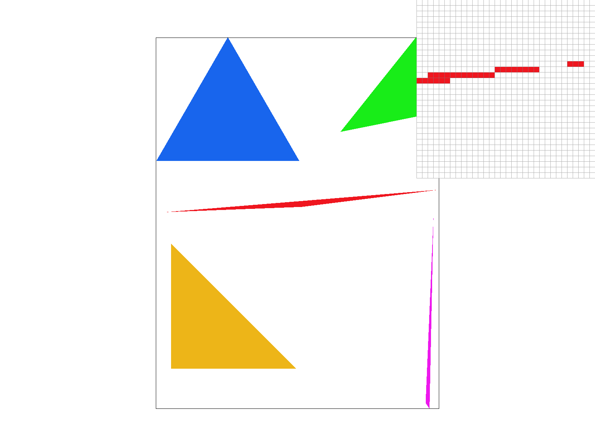 Triangles with the default viewing parameters and interesting scene.
Extra Credit For Task1
In the baseline approach, every pixel within the triangle’s axis-aligned bounding box is tested using three edge functions to decide if it lies inside the triangle. This means that for each pixel (or subpixel) we do up to three multiplications and subtractions, which can be inefficient especially for large bounding boxes where many pixels are tested but not inside the triangle.
Our optimized approach introduces several key improvements:
-
Vertex Sorting and Scan-Line Splitting:
- What We Do: We first sort the triangle’s vertices by their y-coordinate so that we know which vertex is at the top and which at the bottom.
- Why It Helps: This allows us to break the triangle into two regions (or process it in a single scan-line pass) where, for each horizontal scan-line, we only compute the left and right boundaries where the triangle is active.
-
Scan-Line Rasterization with Interpolated X-Intersections:
- What We Do: For each scan-line (each integer y value within the triangle’s vertical span), we compute the x-intersections of the triangle’s edges using linear interpolation. A helper lambda (x_intersect) is used to compute the intersection of a horizontal line with a given edge.
- Why It Helps: Instead of performing three edge function tests per pixel, we compute the left and right x-boundaries once per scan-line and then simply fill all pixels between these boundaries. This eliminates many redundant computations.
-
Screen Clipping:
- What We Do: We clip both the y-range and x-range to the screen dimensions.
- Why It Helps: This avoids processing pixels that lie outside the visible area, saving additional work.
Test Case
| Test Case | Original (ms) | Optimized (ms) | Difference (ms) | Improvement (%) |
|---|---|---|---|---|
| test1.svg | 0.424 | 0.492 | +0.068 | No significant change (slight overhead) |
| test2.svg | 0.101 | 0.072 | -0.029 | +28.71% |
| test3.svg | 10.903 | 2.895 | -8.008 | +73.45% |
| test4.svg | 0.667 | 0.240 | -0.427 | +64.02% |
| test5.svg | 1.880 | 0.633 | -1.247 | +66.33% |
| test6.svg | 1.333 | 0.394 | -0.939 | +70.44% |
| test7.svg | 17.142 | 17.178 | +0.036 | -0.21% |
| test8.svg | 3.289 | 3.328 | +0.039 | -1.19% |
Task 2: Antialiasing by Supersampling
-
Walk Through and Data Structure
Supersampling improves image quality by taking multiple samples per pixel and averaging them to reduce aliasing. In our supersampling algorithm, instead of a single sample at (x+0.5, y+0.5), we distribute sqrt(sample_rate) × sqrt(sample_rate) subsamples inside each pixel.We mainly used the following data structures:
1. sample_buffer: Stores supersampled colors (width * height * sample_rate size), and the data type is "std::vector
". 2. rgb_framebuffer_target: Stores final downsampled colors with the data type "unsigned char*" (width * height * 3 for RGB).
3. sample_rate (not a rigorous data structure, but a parameter used to control sample rate): Controls the number of subsamples per pixel.
-
Why is Supersampling Useful?
Supersampling reduces jagged edges by averaging multiple color samples per pixel, depending on the sample rate, creating a smoother transitions between colors. This helps us minimizes aliasing, especially for triangle edges. -
Modifications to the Rasterization Pipeline:
1. Adjusted fill_pixel() so points and lines remain visible despite supersampling.
2. Modified resolve_to_framebuffer() to downsample by averaging all subsamples and converting them into the final framebuffer.
3. Updated rasterize_triangle() to sample multiple points per pixel, performing a point-in-triangle test for each subsample.
4. Updated set_sample_rate() and set_framebuffer_target() functions to support supersampling.
-
How Supersampling Antialiases Triangles
Before supersampling, we have only two choices for each pixel: "fill in" or "not fill in" the color, which causes server jaggies. However, with supersampling, it smooths out edges of triangles by sampling multiple points with smaller area inside each pixel and calculated their average color. That makes the color shift between "fill in" and "not fill in". As a result, the color we filled in becomes more accurate and blurres the edges, which antialias the triangles.
Here is triangles with the default viewing parameters and sample rates 1, 4, and 16 respectively.
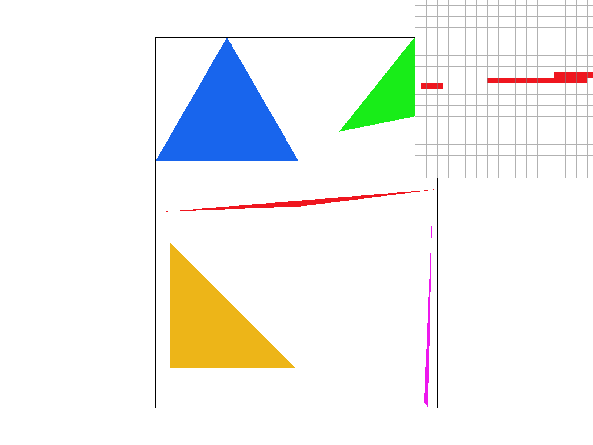 Triangles with the sample rates 1 Triangles with the sample rates 4 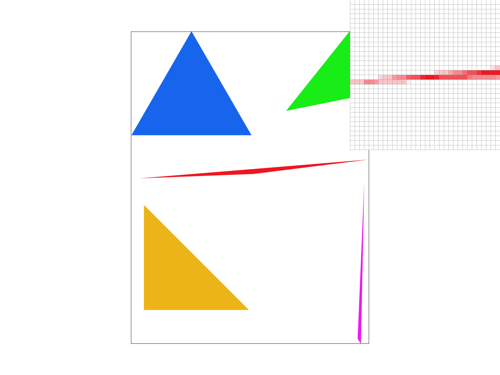 Triangles with the sample rates 16 As we can see from the three images above, as the SAMPLE RATE gets larger, the look of the triangles in very skinny places goes from clear to blurry, and also from very jagged edges to smooth. This is also, as we mentioned earlier, due to the fact that we supersample each pixel into smaller sampled pixel chunks and calculate their average color values, which makes the color values that should be filled in each pixel more accurate. Also, as the sample rate gets larger, the more sampled pixels we average, and the smaller the sampled pixed area, the more accurate the average color value we calculate will be, making the edges of that triangle smoother.
Task 3: Transforms
|
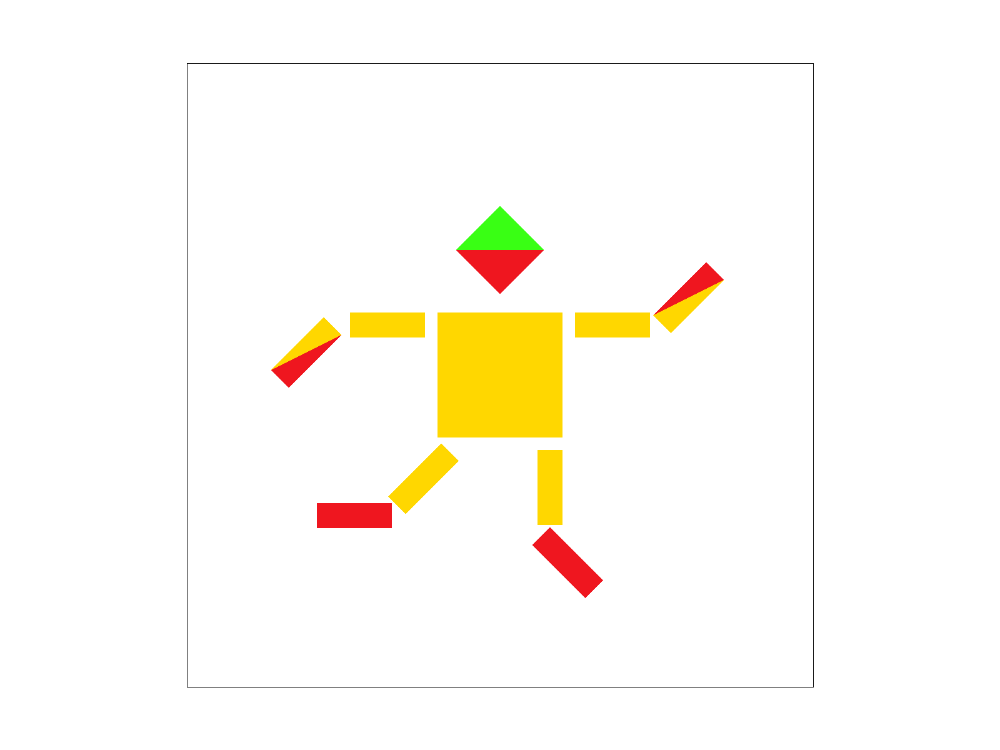
|
We wanted to show cubeman dancing happily after learning the transformation matrix. We chose to make cubeman's dance as enchanting as possible.
To accomplish this, we mainly used the rotation matrix, in which we rotated his left and right lower arms counterclockwise by 45 degrees. Due to the different centers of rotation, we also used translation matrix to translate the lower arms after the rotation to get to their current positions. In addition, we then rotated the left and right lower legs by 45 degrees clockwise and counterclockwise respectively, again using translation matrix to adjust their positions. Finally, to demonstrate our understanding of hierarchical transformation, we have rotated the entire left leg by 45 degrees clockwise at the very beginning of the code representing the left leg as a whole, which, together with the 45 degrees clockwise rotation of the left lower leg mentioned earlier, results in a total of 90 degrees clockwise rotation of the left lower leg in the figure.
Task 4: Barycentric coordinates
Barycentric coordinates provide a powerful method to describe any point inside a triangle by assigning three weights to the triangle’s vertices. These weights indicate how much influence each vertex has on the position of the point.

Assume your triangle has three vertices:
- Red Vertex (A)
- Green Vertex (B)
- Blue Vertex (C)
Any point P inside the triangle can be expressed as a weighted combination of these vertices:
\( P = \alpha A + \beta B + \gamma C \)
Here, the weights \( \alpha \), \( \beta \), and \( \gamma \) are the barycentric coordinates and they satisfy:
\( \alpha + \beta + \gamma = 1 \)
The weights represent the influence of each vertex on the position of P. For example:
- If P is very close to the Red vertex, \( \alpha \) will be high and \( \beta \) and \( \gamma \) will be relatively low.
- If P is exactly at the Red vertex, then \( \alpha = 1 \) and \( \beta = \gamma = 0 \).
- If P lies on the edge between the Red and Green vertices, then \( \gamma = 0 \) and the point is defined solely by \( \alpha \) and \( \beta \).
- If P is at the center of the triangle, a typical choice is \( \alpha = \beta = \gamma = \frac{1}{3} \), representing an equal mix of the three vertices.
This idea is also used in computer graphics. In our triangle, the color of any point is a blend of red, green, and blue based on the barycentric weights. For instance, a point near the Red vertex will appear predominantly red, while a point at the center will show a balanced mix of all three colors.
Result for test7.svg
|
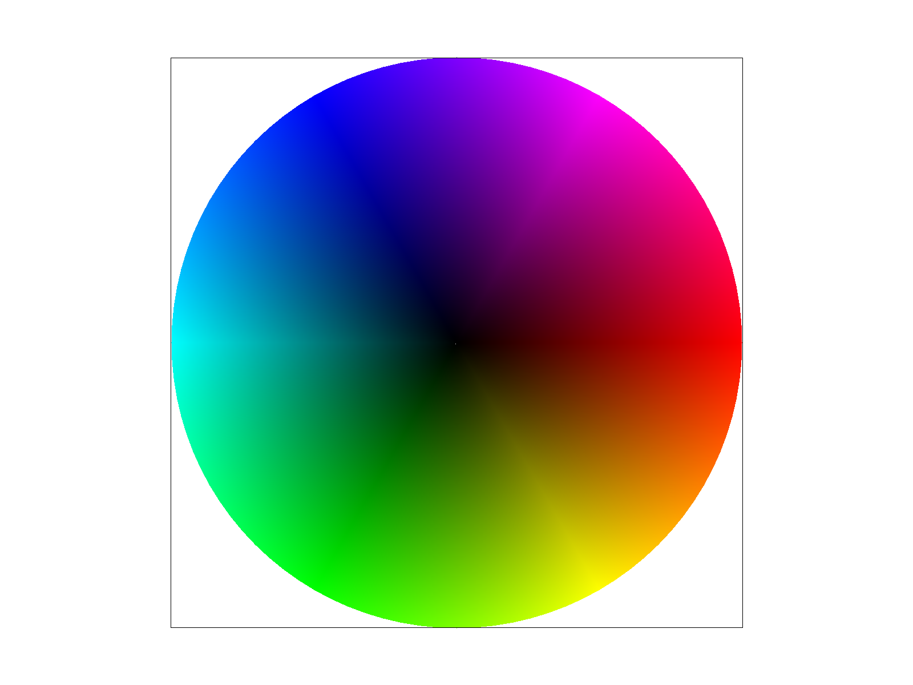
|
Task 5: "Pixel sampling" for texture mapping
1. Explanation of Pixel Sampling & How It’s Used in Texture Mapping
Pixel sampling is the process of determining the color of a textured surface at a given point in screen space by looking up the corresponding color from the texture image. In other words, when we map a triangle (or any polygon) onto the screen, we need to figure out which pixel(s) in our texture correspond to each fragment (sub-pixel) we’re drawing. The “pixel sampling” step decides how we retrieve that texture color: do we simply grab the nearest texel color, or do we do a smoother interpolation among nearby texels?
In our implementation for texture mapping:
-
Convert from screen space to texture space:
Each vertex of the triangle provides (u,v) coordinates, which specify where in the texture image that vertex lies. For each pixel or sub-pixel in screen space, we interpolate (u,v) via barycentric coordinates to figure out the corresponding location in the texture. -
Look up texture color:
Using (u,v), we do a texture lookup on the original full-resolution texture (level 0). Depending on the chosen pixel sampling method, we either use the nearest neighbor approach or bilinear filtering.
2. Nearest Neighbor vs. Bilinear Filtering
-
Nearest Neighbor Sampling (P_NEAREST)
- We convert the continuous (u, v) coordinates to integer texel coordinates (xtex, ytex) by rounding to the closest integer.
- Then, we fetch the exact texel color from
mipmap[0].texels. - This is very simple and fast but can produce “blocky” artifacts when the texture is heavily magnified.
-
Bilinear Sampling (P_LINEAR)
- We still map the continuous (u, v) into floating-point texture space (x, y), but then we determine the four nearest integer texel coordinates that surround (x, y).
- This yields a smoother result, as it blends nearby texels, thereby reducing the blockiness that is common in nearest sampling.
3. When Do These Methods Differ Greatly & Why?
- High Magnification (Zooming In): If you zoom in on a texture using nearest neighbor, each texel expands to cover multiple screen pixels, producing sharp edges (blockiness). Bilinear filtering will blend colors between adjacent texels, smoothing out these blocky edges.
- High Minification (Zooming Out): When the texture is very small on screen, nearest neighbor can cause aliasing and flickering (since it picks “one” texel from a large area). Bilinear interpolation helps, but even more advanced methods (like mipmapping with trilinear filtering) do a better job of reducing aliasing in extreme minification scenarios.
- Edges & Sharp Color Transitions: If the texture contains sharp transitions (like text or line art), nearest neighbor can show jaggy edges, while bilinear smoothing softens these edges.
4. Comparision bewteen different pixel sampling methods with different sample rate
Overall effects comparision in test5.svg
We find that bilinear sampling is more effective for antialiasing when the sample rate is small.
|
|
|
Detailed comparision in test6.svg
We also find that there is a difference in the enhancement effect of antialiasing brought by supersampling for the two sampling methods: for the nearest sampling method, supersampling enhances the effect of antialiasing to a larger extent; while for the For the bilinear sampling method, supersampling is less effective in improving the antialiasing effect.
|
|
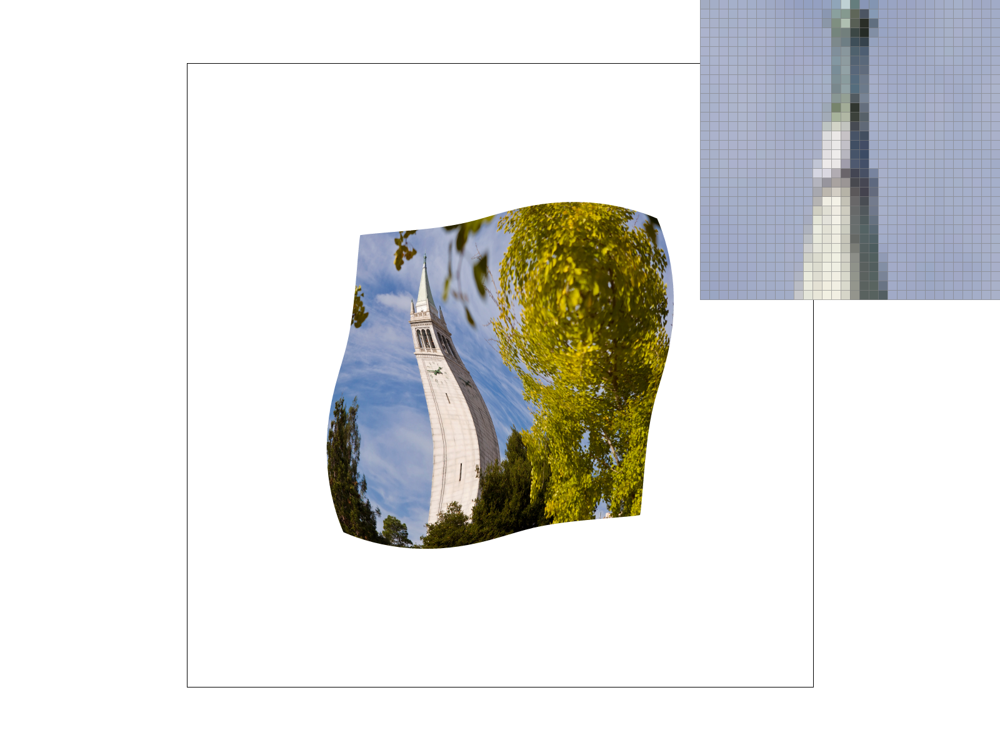
|
|
|
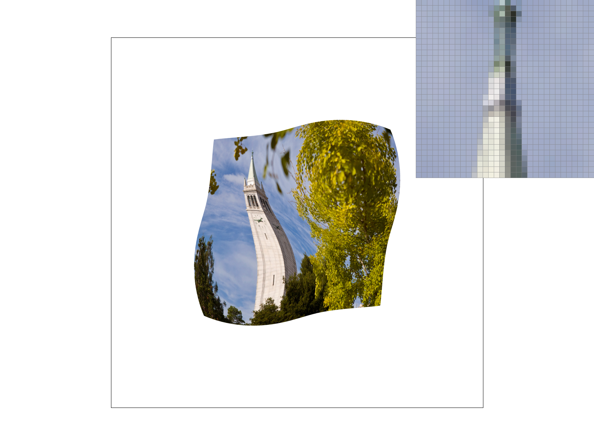
|
Task 6: "Level Sampling" with mipmaps for texture mapping
1. Explanation of Level Sampling
Level sampling refers to how we select which mipmap level(s) to use when looking up texels in a texture. Mipmaps are a sequence of downsampled images that represent the same texture at progressively smaller resolutions. The primary reasons for using mipmaps are:
- Improving performance (by sampling from smaller textures when surfaces are far away).
- Reducing aliasing artifacts when textures are minified.
In the code, we compute a floating-point mipmap level by estimating how large the texture appears in screen space—using the derivatives
(du/dx, dv/dx) and (du/dy, dv/dy). We then decide whether to:
- Always use level 0 (L_ZERO), which ignores the true texture scale (fast code path, but poor quality when zoomed out).
- Pick the nearest integer level (L_NEAREST) to reduce aliasing while having simpler transitions.
- Blend between two adjacent levels (L_LINEAR), also known as trilinear filtering, for the smoothest result.
2. How It’s Implemented in Code
- Computing the Mipmap Level
WithinTexture::get_level(), we:- Obtain
duv_dx = (p_dx_uv - p_uv)andduv_dy = (p_dy_uv - p_uv)in UV space. - Scale these by the texture width and height to convert to texel space:
du_dx, dv_dx, du_dy, dv_dy. - Compute
Lx = sqrt(du_dx^2 + dv_dx^2)andLy = sqrt(du_dy^2 + dv_dy^2). - Use
L = max(Lx, Ly)as the footprint estimate and map that to a level vialog2(L). - Clamp the level between
0andmipmap.size() - 1.
- Obtain
- Sampling at the Computed Level
InTexture::sample(), we select one of three modes:- L_ZERO: Force
level = 0. - L_NEAREST: Round
get_level()to the nearest integer. - L_LINEAR: Do a fractional level and linearly blend between
floor(level)andfloor(level)+1.
P_NEARESTorP_LINEAR), resulting in nearest or bilinear filtering inside that chosen mipmap level(s). - L_ZERO: Force
- Integrating into rasterization
WithinRasterizerImp::rasterize_textured_triangle, we:- Compute barycentric coordinates for the triangle to find
p_uv, p_dx_uv, p_dy_uvat each pixel or sub-pixel. - Populate a
SampleParamsstruct with these derivatives and the chosen sampling modes (psmandlsm). - Call
tex.sample(sp), which returns the correctly filtered color.
- Compute barycentric coordinates for the triangle to find
3. Tradeoffs Between Different Techniques
1. Pixel Sampling Method (PSM)
P_NEAREST
Simply picks the closest texel in the chosen mipmap level (a direct "nearest neighbor" lookup).
- Speed: Very fast; only a single fetch.
- Quality: Can appear blocky or pixelated.
P_LINEAR
Uses bilinear filtering (a weighted average of four neighboring texels).
- Speed: Slightly slower, involves four texel lookups per sample.
- Quality: Smoother transitions, less blocky.
2. Level Sampling Method (LSM)
L_ZERO
Always uses the highest-resolution mip level (level 0).
- Speed: Each sample is still fairly fast, but can be wasteful for distant surfaces.
- Aliasing: Potentially high if the texture is very minified. Edges can shimmer.
L_NEAREST
Uses the one closest integer mipmap level.
- Speed: About as fast as L_ZERO to fetch, but picks the correct resolution for the distance, greatly reducing aliasing.
- Transitions: At certain zoom levels, you may see abrupt transitions between mip levels.
L_LINEAR
(trilinear filtering) blends across two mipmap levels.
- Quality: Very smooth transitions when zooming in and out, best for removing aliasing.
- Speed: Slower because you must do two bilinear samples (eight texel lookups total if also doing P_LINEAR).
- Memory usage: Still the same set of mipmap levels, but more texture fetches per sample.
3. Number of Samples Per Pixel (Supersampling)
When sample_rate > 1, each pixel is subdivided into multiple sub-pixel samples. This further reduces aliasing by better capturing coverage and texture color variation within a single pixel.
- Speed / Memory: Increases rapidly, since you do more texture lookups per pixel.
- Quality: Reduces jaggies and improves antialiasing, especially at edges and small details.
Tradeoffs
Nearest-neighbor sampling is the fastest because it requires only a single texel fetch. Bilinear sampling does more interpolation (4 texels), and trilinear sampling (L_LINEAR + P_LINEAR) does two bilinear fetches, doubling lookups. Supersampling multiplies the number of texture fetches per pixel, further lowering speed.
Mipmaps require about 1/3 more memory than the original texture alone, but they are vital for performance (caching) and quality (minification). Supersampling requires a larger sample buffer—storing multiple color samples per screen pixel—so memory usage for the framebuffer goes up.
Trilinear filtering (L_LINEAR) with bilinear pixel sampling (P_LINEAR) gives smooth transitions between mip levels, significantly reducing aliasing when surfaces are distant or viewed at glancing angles. However, supersampling remains a strong complement: it further reduces aliasing in edges, small geometry details, and coverage issues.
4. Result
Here, we would like to compare the effect of selecting different pixel sampling and different level sampling in our own picture and the world map picture provided in this assignment.
The effect of selecting different pixel sampling and different level sampling in the World Map:
|
|
|
|
|
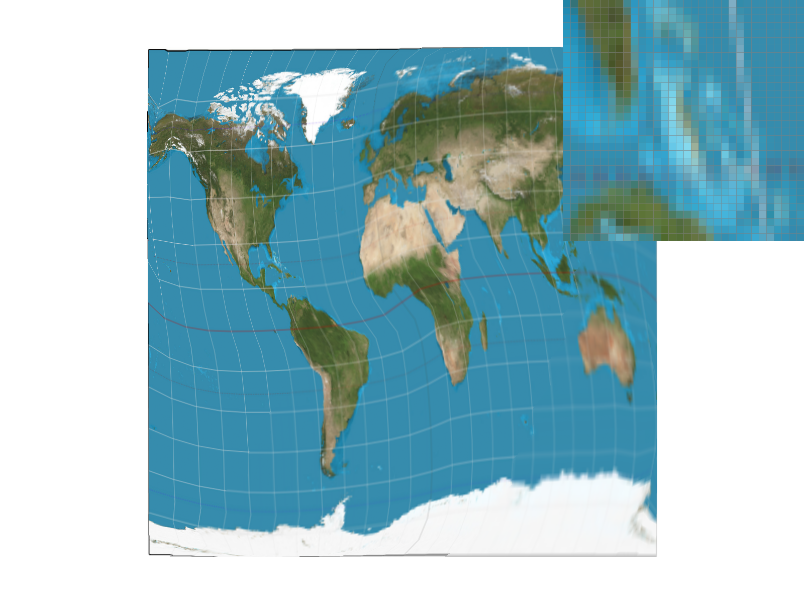
|
The effect of selecting different pixel sampling and different level sampling in our own picture:
|
|
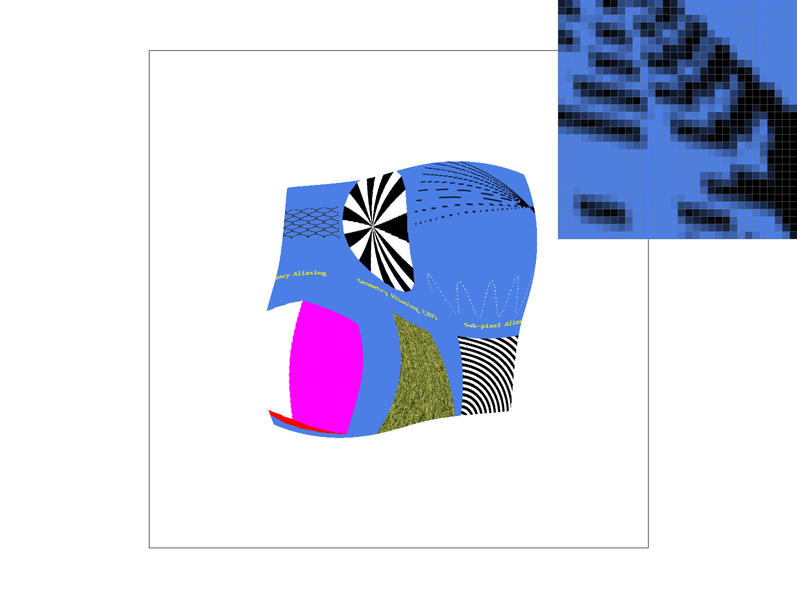
|
|
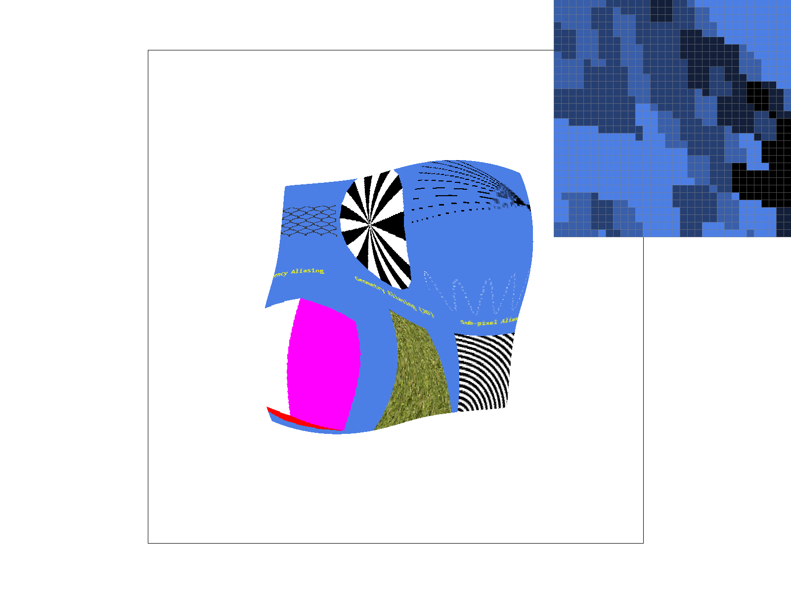
|
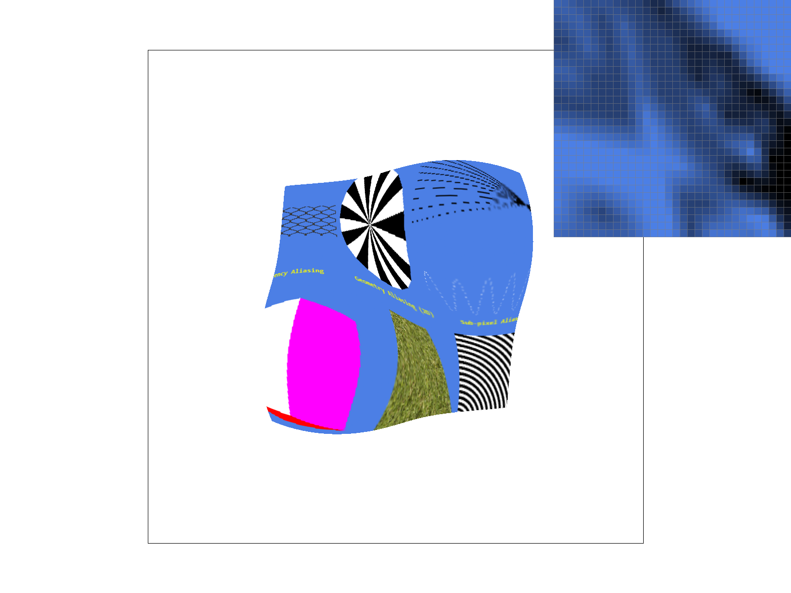
|